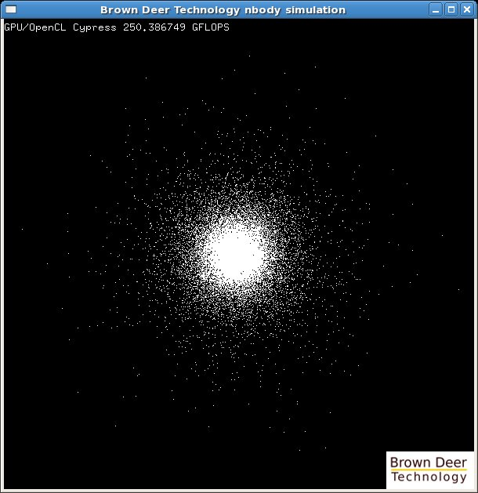
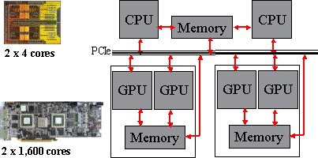

OpenCL™ Tutorial: N-Body Simulation
Copyright © 2009-2010 Brown Deer Technology, LLC.
The Khronus Group develops and maintains the OpenCL standard.
1. Introduction
This tutorial discusses the OpenCL implementation of a simple N-Body simulation. This algorithm is used frequently in demonstrations of computational performance and is an interesting algorithm for several reasons. First, the simulation of the motion of particles subject to particle-particle interactions represents a general class of algorithms with applications ranging from chemistry to astrophysics. Second, the scaling of the algorithm is O(N2) in computation and O(N) in communication, where N is the number of particles. This makes N a convenient tuning parameter for studying the performance of different architectures. For small or large N, one expects an architecture to be relatively communication or compute bound, respectively, and, measured performance can provide valuable information about an underlying architecture. Finally, the algorithm is relatively simple and easy to implement making it useful for a tutorial such as this one.
Notation. Before beginning, a few comments on notation and required resources should be helpful. Source code will be presented with a slightly shaded background and with blue line numbers for reference. The source code will be broken up to allow code "walk-throughs" to explain what is being done and why. Any comments within the source code will be set in green text. Comments will be kept deliberately brief and not used to explain the obvious. (Source code with sprawling prose embedded in comments, explaining the meaning of a few lines of C code can be an annoying distraction.)
Requirements. This tutorial is targeted (and tested) for Linux, although there is no reason why it should not be applicable to Windows, in principle. In order to work through this tutorial you will need:
- A suitable modern Linux platform (openSUSE 11 x86_64 or something similar) with GCC 4.3 or higher,
- An implementation of OpenCL such as the AMD/ATI Stream SDK 2.1, available here
- libstdcl now distributed as part of the coprthr (CO-PRocessing THReads) SDK, available here, LGPLv3 license,
- An OpenCL-supported graphics card such as the ATI Radeon HD 4850, 4870, 5870, or 5970 OR
- If you do not have a suitable graphics card, an x86_64 multi-core processor with at least SSE3 support will suffice
Since many readers may simply want to cut-and-paste the source code for use in other programs, clean copies (no line numbers, etc.) of all source code can be found in the example/ directory of the coprthr SDK distribution.
2. OpenCL Computing Model
OpenCL™ is an industry standard programming API for parallel programming of heterogeneous computing platforms. The most common example of such a platform is a simple desktop computer with a graphics card. OpenCL is a standard much like OpenGL and maintained by the same industry consortium - the Khronos Group. The OpenCL name and logo are trademarks of Apple Inc. who first proposed the standard in 2008. This tutorial is not intended to be an exhaustive tour of the OpenCL standard, which is freely available here. The best way to understand the API is to read the standard. A brief overview or primer will be provided sufficient for a programmer to get started writing OpenCL programs.
OpenCL is comprised of two parts designed to facilitate the programming of heterogeneous platforms with co-processors. In order to program the actual co-processor device OpenCL provides a C-like language for writing computational kernels, which implement the core computational algorithms - perhaps a set of matrix operations, for example. The execution of the kernel code is controlled by the host platform through a runtime API that allow the programmer to orchestrate the execution of the kernels and provides all supporting facilities necessary to do this efficiently in an inherently asynchronous computing environment.
The execution model for OpenCL is based on the parallel execution of a computational kernel across a multi-dimensional index-space of elements called work-items. Although there is no requirement that implementations of OpenCL rely on a multi-threaded execution model, its useful to make this connection conceptually since many programmers are familiar with threads, and kernels must be written to support such an execution model, i.e., they must be thread-safe. Using the language of threads, work-items can be thought of as enumerated threads, where the index-space defines the enumeration. As an example, if one needed to process each pixel in a two-dimensional (2-D) image, the OpenCL index-space would map to the 2-D array of pixels and the programmer would write a kernel that would be executed, possible in parallel, for each pixel.
The host code required to orchestrate the execution of OpenCL kernels provides for the ability to control the operations on the host plus multiple co-processor devices. One of the most significant issues for such an architecture is memory management and OpenCL provides a memory management model that allows relaxed memory consistency. This places the burden on the programmer to ensure that the memory used in operations that are generally concurrent and asynchronous remains consistent. OpenCL provides a platform layer allowing designed to enable support for a range of devices, which the programmer may query for and, if present, determine their respective capabilities and utilize accordingly.
The host-side of OpenCL presents a hierarchy of constructs that must be set-up and managed in order to execute computational kernels. In practical terms, setting up OpenCL for running a relatively simple program requires the following steps:
- Create a context (cl_context) containing the target devices. As a common example, the programmer can create a context to contain all GPU devices. The devices belonging to a given context are identified by a device list (cl_device_id*).
- Create command queues (cl_command_queue*) for each device in the context.
- Create memory objects cl_mem) needed to share memory with the co-processor devices.
- Load and link one or more computational kernels (cl_kernel). In the simplest approach one can build a program (cl_program) based on kernels in a .cl file and the compile and link all kernels for all devices in a context. Note that just-in-time (JIT) compilation is an important aspect of the OpenCL and for this reason the work of the LLVM project has significant and interesting connections to OpenCL.
Executing the computational kerenls then generally involves these additional steps:
- Define an index-space (NDRange) over which the kernel is to be executed.
- Set the arguments of the kernel - in a sense you must explicitly "push" the arguments onto an imaginary stack before executing a kernel. The analogy to a stack breaks down somewhat since setting the arguments need not be in order.
- Ensure that the memory to be used by the kernel is consistent, i.e., make sure all data is where it is needed. This can be accomplished with memory operations that are enqueued on one of the command queues for a particular device.
- Enqueue a kernel for execution on one of the command queues for a particular devices.
- Monitor the associated event (cl_event) corresponding to the enqueued operation. This also applies to the memory operations referred to in step 3.
- Read back any results needed on the host. This is not too different from step 3.
Many elements of the OpenCL programming model can be thought of as operating system functionality moved into user-space since the API provides for careful control of (enumerated) threads within an inherently asynchronous concurrent environment. This is very similar to the basic operation of a generic UNIX kernel. As a result, many of the concepts familiar to the management of threads within an operating system apply conceptually to the OpenCL programming model, e.g., memory consistency, locking and synchronization, work queues, event lists, etc.
3. Basic N-Body Algorithm
The algorithm used for an N-Body simulation models the motion of N particles (or objects) subject to a particle-particle interaction. Each particle interacts with all other particles in the simulation, thus the computation is O(N2). For this tutorial, the interaction considered will be the gravitational force between the particles so that the simulation might represent the motion of stars in a galaxy. (The same algorithm can be used to model very different physics, for example, the motion of charged particles on a much smaller length scale.)
The basic algorithm has two main steps. First, the total force on each particle resulting from the gravitational attraction to all other particles is calculated. Then each particles position and velocity are updated as result of this force using a simple integrator over some small timestep. Repeating this process results in a simulation of the motion of all of the particles (stars) within the system (galaxy).
The formal equations and background are sufficiently discussed on Wikipedia (here and here) and will not be repeated. Instead, we will get right to the algorithm. With suitably defined arrays, etc., the entire (unoptimized) algorithm can be written in C with a few dozen lines of code.
The following code loops over N particles, accumulating the acceleration on each particle resulting from the gravitational force of all others. Acceleration is related to force through the famous relation f = ma, where m is the mass of the particle. Each particle position and velocity are then advanced forward in time using a simple integrator. The process repeats to simulate the motion of the particles over time.
1 for(i=0; i<n; i++) { /* Foreach particle "i" ... */ 2 ax=0.0; 3 ay=0.0; 4 az=0.0;
Line 1 begins the loop over particles "i" and lines 2-4 initialize the acceleration vector that will be used to accumulate the per-particle acceleration.
5 for(j=0; j<n; j++) { /* Loop over all particles "j" */ 6 dx=x[j]-x[i]; 7 dy=y[j]-y[i]; 8 dz=yz[j]-z[i]; 9 invr = 1.0/sqrt(dx*dx + dy*dy + dz*dz + eps); 10 invr3 = invr*invr*invr; 11 f=m[j]*invr3; 12 ax += f*dx; /* accumulate the acceleration from gravitational attraction */ 13 ay += f*dy; 14 az += f*dx; 15 }
Lines 5-15 is the inner loop over all particles "j" where we accumulate the acceleration imparted on particle "i". Note that the self-interaction is excluded implicitly since the distance vectors will be identically zero when i==j and the inverse distance is kept finite in line 9. (Particles do not feel a gravitational attraction to themselves, which is a good thing, since the force would be infinite according to the classical equations.) The steps within the inner loop are as follows.
Lines 6-8 calculates distance vector between particle "j" and particle "i" is calculated.
Lines 9-10 calculates the inverse distance (a scalar quantity) raised to the third power - this is what we need for the gravitational force equation. The parameter eps is the minimum distance squared for particle-particle interactions and its main purpose is to keep the simulation from crashing if particles wander too close together.
Lines 11-14 calculates the contribution to the acceleration vector for particle "i". (Note that the f calculated in line 11 is not actually the force.)
16 xnew[i] = x[i] + dt*vx[i] + 0.5*dt*dt*ax; /* update position of particle "i" */ 17 ynew[i] = y[i] + dt*vy[i] + 0.5*dt*dt*ay; 18 znew[i] = z[i] + dt*vz[i] + 0.5*dt*dt*az; 19 vx[i] += dt*ax; /* update velocity of particle "i" */ 20 vy[i] += dt*ay; 21 vz[i] += dt*az; 22 }
Lines 16-21 update the position and velocity of particle "i" based on the total acceleration resulting from the gravitational force and using a simple integrator. This has the effect of advancing the simulation forward in time by a small timestep dt.
23 for(i=0;i<n;i++) { /* copy updated positions back into original arrays */ 24 x[i] = xnew[i]; 25 y[i] = ynew[i]; 26 z[i] = znew[i]; 27 }
Lines 23-27 the updated positions are copied back into the original arrays (x[], y[], z[]). This step is necessary since we are careful not to write back the updated particle positions into the original arrays (x[], y[], z[]) until ALL of the particle positions have been updated and stored in temporary arrays (xnew[], ynew[], znew[]). A variant of using temporary arrays is to use a "double-buffer" scheme where the particle positions used in the algorithm alternate between two sets of arrays. This issue is often overlooked with the result being that the force on the particles (accept for the first one in the list) is calculated with a mix of current and updated positions. For typical timesteps the error is not visually perceptible (the goal of many N-Body simulations is to create a nice looking demo, not science) but the results are not correct. Here, we will try to implement the algorithm correctly.
4. Program Structure
The basic algorithm will now be implemented for a GPU (or a CPU if you do not have a GPU) using OpenCL. The OpenCL implementation will consist of two parts:
- Kernel code running on the OpenCL co-processing device (the GPU, or if you do not have one, also the CPU), and
- Host code running on the host platform (the CPU)
The kernel code is compiled to run on the GPU and performs the actual computation. Its typically based on critical loops within what might be a larger program and intended to provide an accelerated version of a given algorithm. This makes the kernel code the most critical factor in overall performance.
The host code will perform no meaningful computations, but is still a very important part of the program. This is especially true when extending this simple program to multiple devices, for example. The primary task for the host code is to handle all of the initialization and bookkeeping tasks and then coordinate the operations on the co-processor, including memory management and kernel execution. From this perspective, much of the complexity of well-written OpenCL code exists on the host side.
5. Implementation
The goal is to provide a reasonably standard implementation that is understandable for typical programmers interested in OpenCL. While the design does attempt to use "good practices" from an OpenCL perspective, it is very likely not optimal for a particular architecture, since optimization requires careful tuning that goes beyond the scope of this tutorial.
It is important to consider the context of OpenCL kernel code. This kernel will be executed for every work-item (enumerated thread) within an index-space (range of enumerated threads). Here we have made parenthetic reference to the association between work-items and threads since, although OpenCL does not require work-items to be implemented as threads, many programmers will find it useful to think in these familiar terms.
In our application we will have a one-dimensional index-space with a number of work-items equal to the number of particles in the system. The kernel code will be invoked once for each of the N particles and the task for the kernel code is to update the position and velocity of one particle. For this reason, the "i" loop found in the code presented in Section 2 will not appear anywhere in the OpenCL implementation, but rather will be implied by the index-space over which the kernel is invoked N times.
The Kernel Code
The kernel code should be placed in a separate file with the file extension .cl to distinguish it from ordinary C.
1 /* nbody_kern.cl */ 2 __kernel void nbody_kern( 3 float dt1, float eps, 4 __global float4* pos_old, 5 __global float4* pos_new, 6 __global float4* vel, 7 __local float4* pblock 8 ) {
Lines 2-7 describe the interface to our kernel - note the use of the qualifier __kernel to denote this fact.
Line 3 declares ordinary arguments of intrinsic type, specifically two floats.
Lines 4-6 declare arguments that are pointers to memory holding the particle positions and particle velocities. OpenCL provides qualifiers for different types of memory and here we qualify the pointers as referencing global memory.
The data type for the pointers is float4. OpenCL provides for both scalar and vector data types. Of the many vector data types, float4 is probably the most common and was used historically when GPUs were used exclusively as graphics accelerators. In large part due to this history, the four components of a float4 can be referenced using the suffix .x, .y, .z, and .w, respectively. (OpenCL also provides a more generic notation .s0, .s1, .s2, .s3 that can be generalized to larger vectors.) For our N-Body program we will pack the particle coordinates and particle mass into a four-vector as {x, y, z, m}, and the three velocity components will be packed into a four-vector with the last component ignored, {vx, vy, vz, -}.
The technique of packing the particle mass into the fourth component of the "position vector" may create a degree of syntactic confusion since one must remember that the mass has been put there in defiance of the obvious interpretation of the variable name pos. This is unavoidable - apologies in advance for any confusion this may lead to.
The use of vector data types in OpenCL is not a mere convenience, but is important for performance since an architecture may have a natural vector width within its processing cores. As an example, the AMD/ATI GPU architectures have had a natural type of float4 and efficient implementations on these architectures must exploit this through small SIMD or SSE-like constructions. OpenCL provides extensive support for vector data types to enable the programmer to exploit vector operations on the underlying architecture of different co-processor devices.
Line 7 introduces an additional argument directed toward an optimization OpenCL programmers must become familiar with and stems from the need to begin to think about the memory architecture of the platform. In theory, this argument could be omitted and a working kernel can simply read and write data to and from global memory. However, it is inefficient and overlooks the advantages of using local memory on the GPU.
The argument pblock is qualified as a pointer to local memory (__local) and will be used to cache particle positions for re-use. Further, the caching operation itself will introduce an important concept in OpenCL - cooperative operations within a work-group (small synchronized groups of enumerated threads). More on this below.
9 const float4 dt = (float4)(dt1,dt1,dt1,0.0f); 10 int gti = get_global_id(0); 11 int ti = get_local_id(0); 12 int n = get_global_size(0); 13 int nt = get_local_size(0); 14 int nb = n/nt;
Line 9 initializes a constant float4 that "vectorizes" the timestep, but with a small trick. The last component (.w) is set to zero. The reason is to ensure that we do not alter the particle masses that are stored in the fourth component of our per-particle four-vectors.
Line 10 gets the global id of the work-item (enumerated thread), which in our algorithm tells the kernel the index of the particle that it must update - the "i" of particle "i" in section 3. Since this kernel will be executed for every work-item (enumerated thread) in the index-space (range of enumerated threads) the kernel needs to gather information about itself and where it fits in to the overall execution of all kernels across the index-space.
Line 11 gets the local id of the work-item within the work-group in which it is being executed. The kernel will be executed in work-groups, which may be thought of as tiles or blocks of the index-space. Work-items within a work-group are to some degree locked together in their execution, but have the advantage of being able to share things and work cooperatively. Since our implementation will exploit some cooperation, our kernel needs to get its local id.
Line 12 gets the global size of the index-space, which is needed to determine the total number of particles, being identical in the simple implementation.
Line 13 gets the local work-group size which is also needed. This can be thought of as the number of threads executing this kernel, for different work-items, concurrently and synchronously. While this may not necessarily be true for a particular architecture, its helpful to pretend its true when thinking through the locking and synchronization issues required to have a work-group work cooperatively. (Virtual truth can be useful for programmers.)
Line 14 calculates the number of work-groups that will be used to execute all of the work-items in the index-space. We refer to this as the "number of blocks". This will be used below to replace the algorithms simple loop over all particles with a double-loop over blocks of particles with a nested loop over particles within each block.
15 float4 p = pos_old[gti]; 16 float4 v = vel[gti]; 17 float4 a = (float4)(0.0f,0.0f,0.0f,0.0f);
Line 15-16 reads the particle position (and mass) and velocity of particle "i" for which this kernel invocation is tasked to update.
Line 17 initializes the float4 we will use to accumulate the acceleration on particle "i" - note that the algorithm dictates that this should be a three-vector, however we will simply pad this to use a float4 and ignore the fourth component.
18 for(int jb=0; jb < nb; jb++) { /* Foreach block ... */ 19 pblock[ti] = pos_old[jb*nt+ti]; /* Cache ONE particle position */ 20 barrier(CLK_LOCAL_MEM_FENCE); /* Wait for others in the work-group */ 21 for(int j=0; j<nt; j++) { /* For ALL cached particle positions ... */ 22 float4 p2 = pblock[j]; /* Read a cached particle position */ 23 float4 d = p2 - p; 24 float invr = rsqrt(d.x*d.x + d.y*d.y + d.z*d.z + eps); 25 float f = p2.w*invr*invr*invr; 26 a += f*d; /* Accumulate acceleration */ 27 } 28 barrier(CLK_LOCAL_MEM_FENCE); /* Wait for others in work-group */ 29 }
Line 18 begins our loop over blocks, each one corresponding in size to the work-groups used to span the execution across the index-space of all particles. Thus, there are nb=n/nt blocks where nt is the number of work-items (enumerated threads) in a work-group.
What is being done here within the inner loop of the algorithm can be somewhat confusing, but represents an important example of "good practices" for OpenCL programming. Instead of simply looping over all particles "j" - for(j=0;j<n;j++) - which would be entirely valid (and it works), we will try to be more clever. We know that the range of the loop over j is equal to the number of particles for which the kernel is invoked. In OpenCL-speak, we know that the range of the loop over j is equal to the number of work-items in the index-space. We also know that the index-space is spanned by blocks - work-groups in OpenCL-speak.
Since the force on every particle is dependent upon the position of all other particles, there is a substantial opportunity for data re-use. So we will use a local memory cache (pblock) to store a block of particle positions to be used by all work-items in a work-group. Further, we will have the work-items work cooperatively in copying particle positions from global memory into our local memory cache. Each work-item is assigned the job of copying one particle position. Assignments are made according to the work-items local id within the work group. The procedure is as follows.
Line 19 the kernel copies one particle position from global memory into our local memory cache. If one looks ahead to the inner loop to follow, one sees that the kernel copies one particle position, and later uses nt particle positions in the loop. How did the other nt-1 particle positions get into the local memory cache? The kernel must trust that the other work-items did their job.
Line 20 waits to give them a chance, or risk proceeding with invalid data. This issue is one that is critical to writing OpenCL kernel code and possibly new to many programmers. The kernel is written in such a way as to use data that can only be valid by supposing that multiple instances of the kernel are executed in parallel. Put differently, the kernel analyzed as a single thread of execution appears to rely on data never read from memory. This concept can be confusing at first.
Lines 21-27 comprise the inner loop where the actual computation is done and follows fairly ordinary steps, the only exception being the use of vector operations. The loop is over a block of particle positions that are assumed to have been cache in local memory. First the distance vector is calculated in line 23, the inverse distance is calculated in line 24, and the "force" is calculated in line 25. Remember that p2.w will be the mass of particle "j". In line 26 the acceleration on particle "i" is accumulated.
Note that the subtraction on line 23 is performed as a float4 vector operation (think SSE a modern multicore CPU. Remembering that the particle mass is stored in component 4 (.w) of these float4 vectors should raise concern. This is where the definition of dt in line 9 protects the particle masses from being altered. Its a trick designed to allow a simple implementation that exploits the natural vector width of the architecture.
Line 20 calculates the inverse of the scalar distance between the particles where rsqrt() is an OpenCL built-in equivalent to 1/sqrt(). Line 21 calculates the "force" where p2.w accesses the mass of particle "j". Finally, the acceleration on particle "i" is accumulated in line 22.
Line 28 waits for the others in the work-group to catch up, if necessary. We must wait since the next step will be to begin reading new values into the pblock cache, and if we do not stop to make sure everyone is caught up we run the risk of corrupting the values of the cache for another work-item.
30 p += dt*v + 0.5f*dt*dt*a; 31 v += dt*a; 32 pos_new[gti] = p; 33 vel[gti] = v; 34 }
Lines 30-31 updates the position and velocity of particle "i". Note that these are float4 vector operations, where the position update is careful not to alter the particle mass.
Lines 32-33 the new values are then written back to __global memory, with the velocity overwriting the old value and the position is stored in a separate "new" array.
The Host Code
With the kernel code written, we must create a program to run on the host platform to handling initialization and bookkeeping issues and also orchestrate memory management and the execution of the kernel.
In theory, OpenCL host code should contain sophisticated checks to probe the system, detect available co-processing resources and manage them to most efficiently execute the computational load of the application. Such issues go well beyond this tutorial and we will settle with demonstrating the execution of the kernel code making very simple assumptions. Namely, we will assume we want to execute the kernel code on a single GPU (or the CPU if you do not have a GPU, see below).
It is also important to incorporate robust error checking in any actual application since many things can go wrong and its good to communicate if, and for what reason, the progam has failed to run correctly. (This becomes increasingly important with OpenCL since the number things that can go wrong is many times greater than with ordinary C code and silent failure is fairly easy to find.) However, such rigorous error checking tends to obscure explanations of what the code intends to do in a tutorial such as this, so the host code will be naive and reckless in supposing that everything is working correctly. It is left as an exercise for the reader to incorporate good error checking practices.
The host code described here uses the standard compute layer library called libstdcl. The libstdcl library provides a simplified interface to OpenCL designed to support the most typical use-cases in a style inspired by familiar and traditional UNIX APIs for C programming. The libstdcl library is open-source and freely available under the LGPL license.
Important: if you do not have an OpenCL-capable GPU, but you have a CPU that supports SSE3, the tutorial programs can be tested on the CPU provided that you make the following changes in all source code:
- Replace stdgpu with stdcpu everywhere
- Change the value of nthread to the the number of CPU cores
1 /* nbody.c version #1 */ 2 #include <stdcl.h> 3 void nbody_init( int n, cl_float4* pos, cl_float4* vel ); 4 void nbody_output( int n, cl_float4* pos, cl_float4* vel);
Line 2 includes the stdcl.h header, which indirectly includes CL/cl.h in order to access the OpenCL API through the simplified libstdcl interface.
Lines 3-4 provide prototypes for the functions that setup the programs initial conditions and report the results. These functions are not discussed in much detail since they have nothing to do with OpenCL and are merely utility functions. The quickest way to get going is to have nbody_init() initialize all positions to random values and all velocities to zero. Further, nbody_output() might simply write out the positions, or some global metric such as the average position of the system, to stdout or a file for comparison with a trusted implementation. One can make these utilities as sophisticated as one likes. Examples to get started are provided at the end of this tutorial.
5 int main(int argc, char** argv) { 6 int step,burst; 7 int nparticle = 8192; /* MUST be a nice power of two for simplicity */ 8 int nstep = 100; 9 int nburst = 20; /* MUST divide the value of nstep without remainder */ 10 int nthread = 64; /* chosen for ATI Radeon HD 5870 */ 11 float dt = 0.0001; 12 float eps = 0.0001;
Lines 7-10 set parameters for the simulation, most of them being self-explanatory. The value of nburst is the number of iterations performed before data (particle positions) are read back from the co-processor. The value chosen for nthread works nicely on an ATI Radeon HD 5870. In general, this value should be equal to the maximum number of work-items in a work-group, using OpenCL.
Lines 11-12 set the timestep dt and eps, the minimum interaction distance (squared) between particles.
13 cl_float4* pos1 = (cl_float4*)clmalloc(stdgpu,nparticle*sizeof(cl_float4),0); 14 cl_float4* pos2 = (cl_float4*)clmalloc(stdgpu,nparticle*sizeof(cl_float4),0); 15 cl_float4* vel = (cl_float4*)clmalloc(stdgpu,nparticle*sizeof(cl_float4),0); 16 nbody_init(nparticle,pos1,vel);
Lines 13-15 provide the first OpenCL related steps in the host code. Notice that up to this point, there have been no calls to perform initializations of the OpenCL interface - no "opencl_init() calls" for example. (No such call actually exists in the OpenCL standard - do not waste time looking for it!) The OpenCL standard requires many initialization steps when using the direct API before one gets to the point of actually doing any computing. By using the libstdcl interface to OpenCL, no initializations are needed and the OpenCL API is "ready to go" from the programmers point of view.
Lines 13-15 allocate memory to store the particle positions and velocities. Note that this is not done with malloc(), but rather with a call very similar (by design). Specifically, the libstdcl library provides the clmalloc() to allow the allocation of memory that can be shared with co-processor devices through OpenCL. As with other libstdcl calls, more detail is available by reading the manual pages and the reader is encouraged to do so. Using clmalloc() we allocate memory as a C programmer would normally do with a two added arguments that reveal the special nature of the allocated memory. First, the memory is associated with a specific context - in this case with the default context stdgpu - which makes the allocated memory special in that it may be shared with GPUs through the OpenCL API. The last argument is used for flags passed to clmalloc() and will be ignored (set to zero) for our purposes here.
Line 16 is a call to some function that will initialize the positions and velocities of the particles. Note that this function can be any ordinary function, and need not use or reference OpenCL in any way. The pointers pos1 and vel can be treated like any ordinary pointers to memory entirely compliant with normal pointers returned from malloc().
17 void* h = clopen(stdgpu,"nbody_kern.cl",CLLD_NOW); 18 cl_kernel krn = clsym(stdgpu,h,"nbody_kern",CLLD_NOW);
Lines 17 loads the OpenCL program comprised of the kernel code that was described above and assumed to be in the file nbody_kern.cl. The OpenCL program is loaded into the stdgpu context and the last argument forces all loading and linking to be now, and not deferred.
Line 18 gets a handle of type cl_kernel (in practice a pointer) to the actual kernel that we identify by name. In this case it happens to simply be "nbody_kern", similar to the filename in which it is defined. However, our kernel function could have been called "foo" and our .cl could have contained multiple kernel functions. The call to clsym() is used to find the kernel we want and performs a function very similar to that of dlsym() for ordinary shared libraries.
It is worth pointing out that the overall interface of clopen() and clsym() will likely be familiar to programmers already familiar with the functions dlopen()and dlsym()used for conventional shared libraries. This is not an accident since the interface for loading OpenCL code was modeled after these calls. It is also worth noting that libstdcl facilitates the embedding of OpenCL code directly within the ELF executable, which would make the specification of the separate .cl file unnecessary. Here we use the "separate file model" to emphasize the just-in-time (JIT) nature of OpenCL programs, where the machine code generation must be deferred until runtime, when actual co-processor device present is identified. In this example, the backend compiler will perform a JIT compilation and target our GPU at runtime.
19 clndrange_t ndr = clndrange_init1d(0,nparticle,nthread); 20 clarg_set(krn,0,dt); 21 clarg_set(krn,1,eps); 22 clarg_set_global(krn,4,vel); 23 clarg_set_local(krn,5,nthread*sizeof(cl_float4));
Line 19 defines the index-space for our kernel execution. Our kernel will be executed over an index-space of N work-items representing the update of the positions and velocities of N particles. The index-space in OpenCL is referred to as an "NDRange" which stands for N-Dimensional Range, since the index-space can be multi-dimensional. For our code, we are using a simple 1-D index-space.
Lines 20-23 set the arguments of our kernel based on host-side objects. This will be unfamiliar to ordinary C programmers since it represents a syntactically verbose call model API. However, it has its purpose which one discovers quickly when writing more complicated OpenCL code. Each can be though of as explicitly pushing the respective arguments onto a "stack" with the exception that arguments need not be set in order (and here the analogy breaks down). The position of the argument with reference to the prototype of our kernel (counting from zero as all C programmers do) is specified as an argument to the clarg_set*() family of functions.
There are three variants reflective of the different nature of the argument for our kernel. Line 20-21 set ordinary arguments of intrinsic type. Line 22 sets a pointer to global memory. Line 23 is actually just setting the size in bytes of the local memory we wish to provide to our kernel, and does not set any actual argument (the local memory is not initialized).
24 clmsync(stdgpu,0,pos1,CL_MEM_DEVICE|CL_EVENT_NOWAIT); 25 clmsync(stdgpu,0,vel,CL_MEM_DEVICE|CL_EVENT_NOWAIT);
26 for(step=0; step<nstep; step+=nburst) { 27 for(burst=0; burst<nburst; burst+=2) { 28 clarg_set_global(krn,2,pos1); 29 clarg_set_global(krn,3,pos2); 30 clfork(stdgpu,0,krn,&ndr,CL_EVENT_NOWAIT); 31 clarg_set_global(krn,2,pos2); 32 clarg_set_global(krn,3,pos1); 33 clfork(stdgpu,0,krn,&ndr,CL_EVENT_NOWAIT); 34 } 35 clmsync(stdgpu,0,pos1,CL_MEM_HOST|CL_EVENT_NOWAIT); 36 clwait(stdgpu,0,CL_KERNEL_EVENT|CL_MEM_EVENT|CL_EVENT_RELEASE); 37 }
Lines 26-27 is comprised of a double loop used to iteratively update the particle positions and velocities to advance the simulation forward in time. The outer step loop advances the simulation forward nstep timesteps. The inner burst loop is used to iterate the simulation forward a certain number of steps before doing any data transfer back to the host. This design is useful for diagnostic purposes - the value of nburst can be used to examine compute-communication ratios. The design is also useful in practice since it is typically not necessary to read back data each timestep. (The technique is called striding and is very typical in particle simulations.
Lines 28-29 set the two arguments of the kernel that must be changed for each time the kernel is executed, and which were not set above near lines 20-23. The reason for this is that we are using a "double-buffer" scheme wherein we will alternately use the arrays pos1 and pos2 to represent the old and new particle positions for each update.
Line 30 has the effect of enqueueing the kernel on the command queue for execution, to be executed with the arguments already set and over the index-space defined by ndr (the NDRange). The flag CL_EVENT_NOWAIT tells clfork() the enqueue the kernel for execution but not to block or wait for the event to complete. Instead, it returns immediately.
Lines 31-32 repeat the steps in lines 28-29 with the only difference being the association of pos1 and pos2 with the "old" and "new" particle positions passed to the kernel.
Line 36 synchronizes the memory pos1 with the host causing the particle positions to be read back to the host. The flag CL_EVENT_NOWAIT tells clmsync() not to block.
Line 36 waits or blocks until the 2*nburst kernel executions have completed and memory has been synchronized with the host. The flag CL_EVENT_RELEASE causes clwait() to release all of the events before returning.
The above steps are repeated until the simulation has been advanced nstep steps forward in time.
38 nbody_output(nparticle,pos1,vel); 39 clclose(stdgpu,h); 40 clfree(pos1); 41 clfree(pos2); 42 clfree(vel); 43 }
Line 38 simply provides some type of output to report back the results of the simulation.
Line 39 is the complement of the clopen() call and causes the associated CL programs to be released.
Lines 40-42 are the complements of the memory allocations performed with clmalloc().
6. Compiling and Running the Program
Compiling the program is best described using a makefile since this is what most programmers will want to set up. The following makefile can be used to build the program and is based on the syntax suitable for GNU make (gmake). The makefile will require modification in lines 4-5 to reflect the location of where the OpenCL implementation and libstdcl packages are located.
Compiling and running the program should simply require typing "make" at the command line and then "./nbody".
1 ### Makefile for N-Body program 2 NAME = nbody 3 OBJS = nbody_init.o nbody_output.o 4 OPENCL = /path/to/atistream 5 STDCL = /path/to/browndeer 6 INCS += -I$(OPENCL)/include -I$(STDCL)/include 7 LIBS += -L$(OPENCL)/lib/x86_64 -lOpenCL -lpthread -ldl -L$(STDCL)/lib -lstdcl 8 CFLAGS += -O3 9 all: $(NAME).x 10 $(NAME).x: $(NAME).o $(OBJS) 11 $(CC) $(CFLAGS) $(INCS) -o $(NAME).x $(NAME).o $(OBJS) $(LIBS) 12 .SUFFIXES: 13 .SUFFIXES: .c .o 14 .c.o: 15 $(CC) $(CFLAGS) $(INCS) -c $< 16 clean: 17 rm -f *.o *.x
7. Multi-GPU Implementation NEW
 One of the most important objectives of
OpenCL is to provide for the precise control of of data movement and kernel
execution on multiple devices. In this section the extension of the single
device N-Body code to two GPUs is discussed. In general you would need either
two Radeon HD 5870s or a single Radeon HD 5970 in order to run this dual GPU
version.
One of the most important objectives of
OpenCL is to provide for the precise control of of data movement and kernel
execution on multiple devices. In this section the extension of the single
device N-Body code to two GPUs is discussed. In general you would need either
two Radeon HD 5870s or a single Radeon HD 5970 in order to run this dual GPU
version.
The basic idea is to divide the particles into two groups and have each GPU compute the update for its respective set of particles. Since the force on a given particle will depend on ALL other particles it will be necessary to exchange particle positions each iterative step. This might at first appear to be a performance killer. However, since the algorithm is O(N2), for a sufficient number of particles some performance advantage can be gained.
Notation. Since the single device code will be used as a starting point red line numbers fwill be used to highlight new or significantly modified lines of code. Note that the line numbers will not match with the single device version since lines of code are being added.
The Kernel Code (two GPUs)
1 /* nbody2_kern.cl */ 2 __kernel void nbody_kern( 3 float dt1, float eps, 4 __global float4* pos_old, 5 __global float4* pos_new, 6 __global float4* vel, 7 __local float4* pblock, 8 __global float4* pos2 9 ) {
An addition argument is added at line 8. This is necessary since the particle positions are split into two arrays and each GPU will require the "cross term" of particle positions to use in the force calculation.
10 const float4 dt = (float4)(dt1,dt1,dt1,0.0f); 11 int gti = get_global_id(0); 12 int ti = get_local_id(0); 13 int n = get_global_size(0); 14 int nt = get_local_size(0); 15 int nb = n/nt; 16 float4 p = pos_old[gti]; 17 float4 v = vel[gti]; 18 float4 a = (float4)(0.0f,0.0f,0.0f,0.0f);
Lines 10-18 have no changes from the single device version.
19 for(int jb=0; jb < nb; jb++) { /* Foreach block ... */ 20 pblock[ti] = pos_old[jb*nt+ti]; /* Cache ONE particle position */ 21 barrier(CLK_LOCAL_MEM_FENCE); /* Wait for others in the work-group */ 22 for(int j=0; j<nt; j++) { /* For ALL cached particle positions ... */ 23 float4 p2 = pblock[j]; /* Read a cached particle position */ 24 float4 d = p2 - p; 25 float invr = rsqrt(d.x*d.x + d.y*d.y + d.z*d.z + eps); 26 float f = p2.w*invr*invr*invr; 27 a += f*d; /* Accumulate acceleration */ 28 } 29 barrier(CLK_LOCAL_MEM_FENCE); /* Wait for others in work-group */ 30 pblock[ti] = pos2[jb*nt+ti]; /* Cache ONE particle position */ 31 barrier(CLK_LOCAL_MEM_FENCE); /* Wait for others in the work-group */ 32 for(int j=0; j<nt; j++) { /* For ALL cached particle positions ... */ 33 float4 p2 = pblock[j]; /* Read a cached particle position */ 34 float4 d = p2 - p; 35 float invr = rsqrt(d.x*d.x + d.y*d.y + d.z*d.z + eps); 36 float f = p2.w*invr*invr*invr; 37 a += f*d; /* Accumulate acceleration */ 38 } 39 barrier(CLK_LOCAL_MEM_FENCE); /* Wait for others in work-group */ 40 }
Lines 30-39 are identical to lines 20-29 with the acception of the array from which the positions are being read. This accomplishes the "cross term" of particle positions that must be used to accumulate the force on the particles point updated. It should be noted that this approach is not the only possible implementation, but was chosen since it keeps the newly added and modified code relatively seperated from the original code for tutorial purposes.
41 p += dt*v + 0.5f*dt*dt*a; 42 v += dt*a; 43 pos_new[gti] = p; 44 vel[gti] = v; 45 }
Lines 10-18 have no changes from the single device version.
The Host Code (two GPUs)
1 /* nbody2.c version #2 */ 2 #include <stdcl.h> 3 void nbody_init( int n, cl_float4* pos, cl_float4* vel ); 4 void nbody_output( int n, cl_float4* pos, cl_float4* vel);
Lines 1-4 have no changes from the single device version.
5 int main(int argc, char** argv) { 6 int step,burst; 7 int nparticle = 8192; /* MUST be a nice power of two for simplicity */ 8 int nparticle2 = nparticle/2; 9 int nstep = 100; 10 int nburst = 20; /* MUST divide the value of nstep without remainder */ 11 int nthread = 64; /* chosen for ATI Radeon HD 5870 */ 12 float dt = 0.0001; 13 float eps = 0.0001;
Line 8 trivially adds a variable for 1/2 the number of particles.
14 cl_float4* pos1 = (cl_float4*)clmalloc(stdgpu,nparticle*sizeof(cl_float4),0); 15 cl_float4* pos1a = (cl_float4*)clmalloc(stdgpu,nparticle2*sizeof(cl_float4),0); 16 cl_float4* pos1b = (cl_float4*)clmalloc(stdgpu,nparticle2*sizeof(cl_float4),0); 17 cl_float4* pos2a = (cl_float4*)clmalloc(stdgpu,nparticle2*sizeof(cl_float4),0); 18 cl_float4* pos2b = (cl_float4*)clmalloc(stdgpu,nparticle2*sizeof(cl_float4),0); 19 cl_float4* vel = (cl_float4*)clmalloc(stdgpu,nparticle*sizeof(cl_float4),0); 20 cl_float4* vela = (cl_float4*)clmalloc(stdgpu,nparticle2*sizeof(cl_float4),0); 21 cl_float4* velb = (cl_float4*)clmalloc(stdgpu,nparticle2*sizeof(cl_float4),0); 22 nbody_init(nparticle,pos1,vel); 23 memcpy(pos1a,pos1,nparticle2*sizeof(cl_float4)); 24 memcpy(pos1b,pos1+nparticle2,nparticle2*sizeof(cl_float4)); 25 memcpy(vela,vel,nparticle2*sizeof(cl_float4)); 26 memcpy(velb,vel+nparticle2,nparticle2*sizeof(cl_float4));
Now things get a bit complicated. The approach here is to still allocate storage for arrays containing the positions and velocities of all particles, and then allocate additional storage, 1/2 the size, for the split arrays. Not efficient, but convenient to connect with the original sinngle device version.
Lines 15-18 allocated storage for the split arrays, where the notation "a" and "b" will correspond to GPU 0 and 1, respectively. There are four split allocations for the particle positions sinnce the double-buffering trick will still be used.
Lines 20-21 allocate the split arrays for particle velocity with similar notation.
Following the initialization of positions and velocities, lines 23-26 copy the data from the full arrays into the split arrays.
27 void* h = clopen(stdgpu,"nbody2_kern.cl",CLLD_NOW); 28 cl_kernel krn = clsym(stdgpu,h,"nbody2_kern",CLLD_NOW);
Line 27-28 have trivial change to reflect the name of our two GPU kernel program.
29 clndrange_t ndr2 = clndrange_init1d(0,nparticle2,nthread); 30 clarg_set(krn,0,dt); 31 clarg_set(krn,1,eps); 32 clarg_set_local(krn,5,nthread*sizeof(cl_float4));
Line 29 has a subtle, but important change to be noted. The index-space over which the kernel will be executed is reduced by 1/2 as compared to the single device version. This accounts for the fact that each of the two GPUs will perform 1/2 of the work.
33 clmsync(stdgpu,0,pos1a,CL_MEM_DEVICE|CL_EVENT_NOWAIT); 34 clmsync(stdgpu,0,pos1b,CL_MEM_DEVICE|CL_EVENT_NOWAIT); 35 clmsync(stdgpu,0,vela,CL_MEM_DEVICE|CL_EVENT_NOWAIT); 36 clmsync(stdgpu,1,pos1a,CL_MEM_DEVICE|CL_EVENT_NOWAIT); 37 clmsync(stdgpu,1,pos1b,CL_MEM_DEVICE|CL_EVENT_NOWAIT); 38 clmsync(stdgpu,1,velb,CL_MEM_DEVICE|CL_EVENT_NOWAIT);
Lines 33-35 synchronize the split arrays for GPU 0 having the effect of writing the data to the GPU.
Lines 36-38 synchronize the split arrays for GPU 1 having the effect of writing the data to the GPU.
39 for(step=0; step<nstep; step+=nburst) { 40 for(burst=0; burst<nburst; burst+=2) {
Lines 39-40 begin the double-loop exactly as was done in the single device version.
What follows in the loop body is perhaps the most complicated aspect of a multi-device implementation. This is where the fine-grained control and synchronization of concurrent operations on multiple devices, provided by OpenCL, is heavily exploited. The objective is to control the operation of the host and GPUs so as to overlap the work performed as much as possible to exploit the device-level parallelism.
41 clarg_set_global(krn,2,pos1a); 42 clarg_set_global(krn,3,pos2a); 43 clarg_set_global(krn,4,vela); 44 clarg_set_global(krn,6,pos1b); 45 clfork(stdgpu,0,krn,&ndr2,CL_EVENT_NOWAIT); 46 clarg_set_global(krn,2,pos1b); 47 clarg_set_global(krn,3,pos2b); 48 clarg_set_global(krn,4,velb); 49 clarg_set_global(krn,6,pos1a); 50 clfork(stdgpu,1,krn,&ndr2,CL_EVENT_NOWAIT); 51 clmsync(stdgpu,0,pos2a,CL_MEM_HOST|CL_EVENT_NOWAIT); 52 clmsync(stdgpu,1,pos2b,CL_MEM_HOST|CL_EVENT_NOWAIT); 53 clflush(stdgpu,0,0); 54 clflush(stdgpu,1,0); 55 clwait(stdgpu,0,CL_KERNEL_EVENT|CL_MEM_EVENT|CL_EVENT_RELEASE); 56 clwait(stdgpu,1,CL_KERNEL_EVENT|CL_MEM_EVENT|CL_EVENT_RELEASE); 57 clmsync(stdgpu,0,pos2b,CL_MEM_DEVICE|CL_EVENT_NOWAIT); 58 clmsync(stdgpu,1,pos2a,CL_MEM_DEVICE|CL_EVENT_NOWAIT);
Lines 41-45 set the arguments and enqueue the kernel for execution on GPU 0, without blocking.
Lines 46-50 set the arguments and enqueue the kernel for execution on GPU 1, without blocking.
Lines 51-52 sync the updated particle positions, stored in split arrays, with the host, effectively reading this data back from the respective GPUs. These calls are also performed without blocking.
Lines 53-54 flush the command queues for the respective GPUs forcing them to perform the work that has been scheduled through lines 41-52.
Lines 55-56 block on the completion of the events being executed on the respective GPUs. While blocking on GPU 0 in line 55 work should be executing concurrently on GPU 1.
Lines 57-58 completes the exchange of the updated particle positions between the GPUs, with the operation being enqued without blocking.
59 clarg_set_global(krn,2,pos2a); 60 clarg_set_global(krn,3,pos1a); 61 clarg_set_global(krn,4,vela); 62 clarg_set_global(krn,6,pos2b); 63 clfork(stdgpu,0,krn,&ndr2,CL_EVENT_NOWAIT); 64 clarg_set_global(krn,2,pos2b); 65 clarg_set_global(krn,3,pos1b); 66 clarg_set_global(krn,4,velb); 67 clarg_set_global(krn,6,pos2a); 68 clfork(stdgpu,1,krn,&ndr2,CL_EVENT_NOWAIT); 69 clmsync(stdgpu,0,pos1a,CL_MEM_HOST|CL_EVENT_NOWAIT); 70 clmsync(stdgpu,1,pos1b,CL_MEM_HOST|CL_EVENT_NOWAIT); 71 clflush(stdgpu,0,0); 72 clflush(stdgpu,1,0); 73 clwait(stdgpu,0,CL_KERNEL_EVENT|CL_MEM_EVENT|CL_EVENT_RELEASE); 74 clwait(stdgpu,1,CL_KERNEL_EVENT|CL_MEM_EVENT|CL_EVENT_RELEASE); 75 clmsync(stdgpu,0,pos1b,CL_MEM_DEVICE|CL_EVENT_WAIT|CL_EVENT_RELEASE); 76 clmsync(stdgpu,1,pos1a,CL_MEM_DEVICE|CL_EVENT_WAIT|CL_EVENT_RELEASE);
Lines 59-76 repeat the steps in lines 41-58 with small changes in notation to implement the same double-buffering introduced for the single device version, and are left to the programmer to decipher.
77 } 78 clflush(stdgpu,0,0); 79 clflush(stdgpu,1,0); 80 clwait(stdcpu,0,CL_MEM_EVENT|CL_EVENT_RELEASE); 81 clwait(stdcpu,1,CL_MEM_EVENT|CL_EVENT_RELEASE); 82 }
Line 77 closes out the inner burst loop and must be followed by a trailing flush and block in lines 78-81 at which point the outer loop is closed in line 82.
83 memcpy(pos1, pos1a, nparticle2*sizeof(cl_float4)); 84 memcpy(pos1+nparticle2, pos1b, nparticle2*sizeof(cl_float4)); 85 nbody_output(nparticle,pos1,vel); 86 clclose(stdgpu,h); 87 clfree(pos1); 88 clfree(pos1a); 89 clfree(pos1b); 90 clfree(pos2a); 91 clfree(pos2b); 92 clfree(vel); 93 clfree(vela); 94 clfree(velb); 95 }
The remaining steps are largely clean-up operations. Lines 83-84 copy the final particle positions from the split arrays into a single array. The program then finishes with output and closing/releasinng resources.
Copyright © 2009-2010 Brown Deer Technology, LLC.
document revision 2 (20100814)